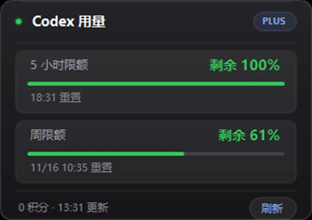
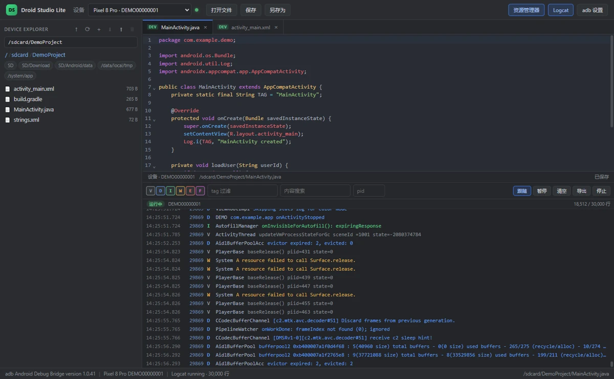
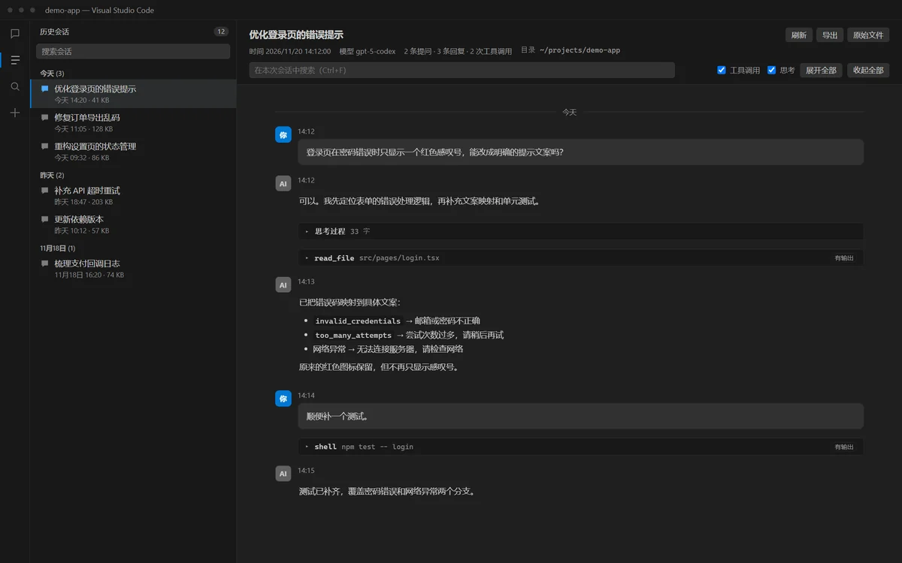
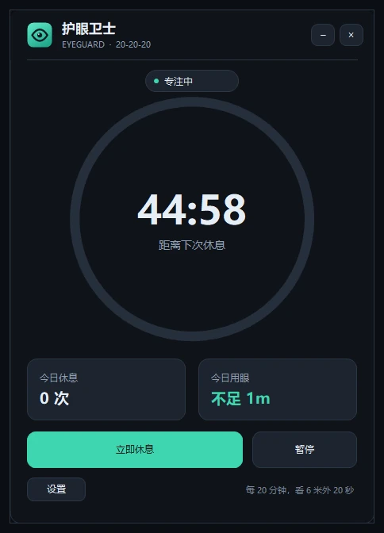
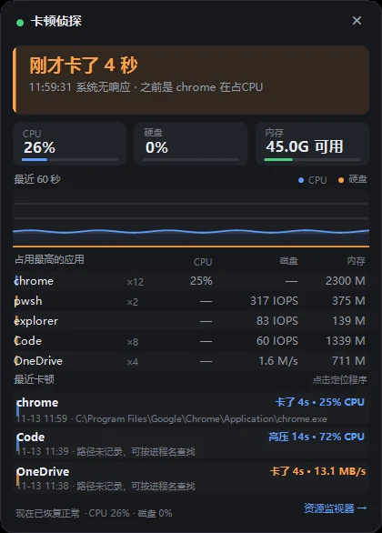
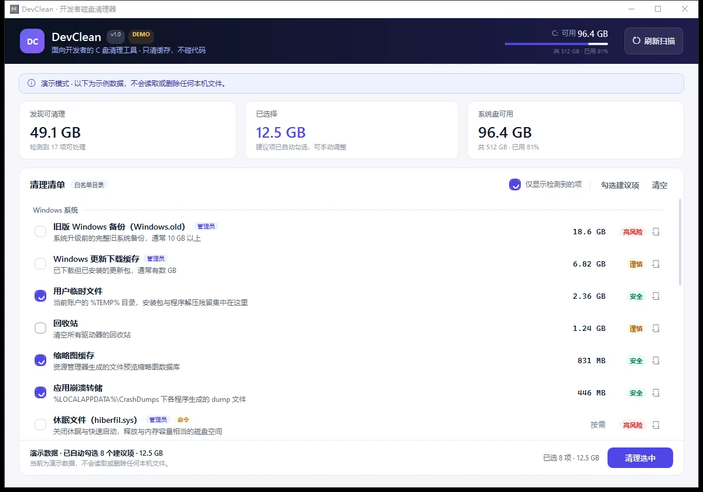
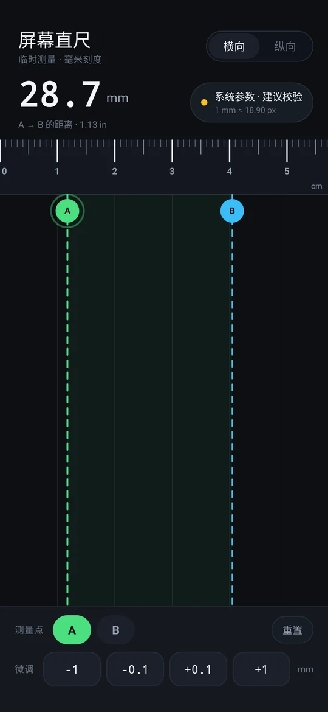

一个窗口，多个工作现场 精选工具
精选工具
精选工具CmdDock
多标签原生终端告别堆满任务栏的命令行窗口。把 cmd、PowerShell 收进同一个窗口，多标签、任意分屏，搜索和目录书签也都在手边。
一个开发者的日常小作品
从「要是有个工具就好了」开始，
把重复的操作、零碎的麻烦，变成顺手的一下。
Windows 桌面/Android 随身工具

11 个实用工具从电脑桌面，到手机屏幕
MADE TO MAKE LIFE EASIER ↘THE TOOLBOX
解决一个小问题，省下一点时间。
显示全部 11 个工具
精选工具告别堆满任务栏的命令行窗口。把 cmd、PowerShell 收进同一个窗口，多标签、任意分屏，搜索和目录书签也都在手边。

不用启动 Gradle 或加载项目索引。连接 adb，就能查看 Logcat、管理设备文件，在多标签编辑器里修改本地与设备上的文本。

按天翻阅本机 Codex 会话，搜索消息、思考与工具调用。导出 Markdown，或一键回到 Codex 继续对话，记录解析全在本地完成。
把 5 小时与每周剩余额度放到托盘和悬浮状态条，自动刷新，专注写代码时也能随时掌握余量。

Unity、VS Code、文件夹、终端各归各位。自动识别项目，也能手动拖拽分组，点一下就切回工作现场。
 Alt+鼠标中键
Alt+鼠标中键按一下快捷键，常用软件出现在光标旁。不必回桌面翻找图标，还能扫描已安装的程序，批量加入列表。

按 Alt + F3 随时呼出，写完切回工作。内容自动保存，亮暗主题自由切换，让转瞬即逝的想法有个落脚点。

默认专注 45 分钟、休息 5 分钟，用全屏遮罩提醒你停一停。支持远眺微提醒和蓝光过滤，常驻托盘，双击即用。

每秒采样，保留最近 60 秒曲线。电脑卡完再打开，也能回看 CPU、磁盘和内存的状态，找到占资源的应用。

系统临时文件和开发工具缓存统一查看，按体积、风险分级列出。先看清楚占用在哪里，再勾选需要清理的项目。

把手机屏幕变成毫米直尺。拖动两条测量线查看距离，横纵方向都能量，还支持用银行卡或硬币校准刻度。
换个关键词，或者看看全部工具。
小工具还会继续增加，慢慢做，慢慢用。
BEHIND THE TOOLS
喜欢折腾，也喜欢把折腾过的东西做成工具。
这里收集了我最近做的 11 个小项目：让窗口整齐一点、操作少一点、问题更好查一点，也记得按时休息。如果刚好能帮到你，那就再好不过。